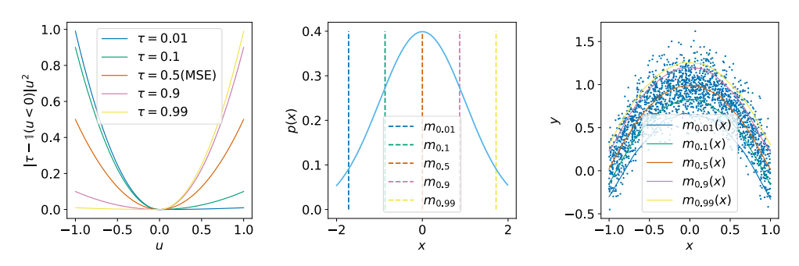

- 저자: Ilya kostrikov, Ashvin Nair, Sergey Levine
- 발표: ICLR 2022
- 논문
- OpenReview
- Code (Jax)
TL;DR
이 논문은 Offline RL 알고리즘 중 하나인 Implicit Q-Learning에 대한 내용을 담고 있다. 이 알고리즘의 핵심은 가장 마지막에 학습된 policy를 가지고 unseen action에 대해서 평가를 하지 않고, state value function을 일종의 random variable로 간주하여, policy improvement step을 implicit하게 근사하는 것이다. 그리고 나서 해당 state에 대한 best action의 value를 추정하기 위해 해당 random variable에 대한 state conditional upper expectile을 구했다.
내용 정리
Offline RL의 문제점
Online (On-policy 나 Off-policy) RL 과는 다르게, Offline RL은 환경과의 interaction없이 기존에 수집한 데이터를 바탕으로 모델을 학습하는 구조로 되어 있다. 일반적으로 이 방식을 따르는 알고리즘들은 Approximate Dynamic Programming (ADP)의 형태를 띄게 된다.
Approximate Dynamic Programming이란 Function Approximation 과정을 통해 state space를 discretize 하고, 이를 바탕으로 Dynamic Programming을 수행하는 방식이다. 이는 일반적인 Dynamic Programming의 경우, state space가 커지면 연산량이 기하급수적으로 증가하는 문제를 해결하기 위한 방법이다.
이때 temporal difference error를 최소화하는 방향으로 학습이 이뤄지는데, 이에 대한 Loss는 Equation 1 와 같다.
\[ L_{\text{TD}}(\theta) = \mathbb{E}_{\textcolor{red}{(s, a, s')} \sim \mathcal{D}} [(r(s, a) + \gamma \textcolor{red}{\max_{a'} Q_{\hat{\theta}}(s', a')} - Q_{\theta}(s, a))^2] \tag{1}\]
여기서 \(\mathcal{D}\) 는 수집된 dataset이고, \(Q_{\theta}(s, a)\) 는 \(\theta\) 로 파라미터화된 Q-function이다. 그리고 \(Q_{\hat{\theta}}(s', a')\) 는 Polyak averaging 같은 방식을 통해서 parameter를 soft update하는 target network을 의미하고, 우리가 찾는 policy \(\pi(s) = \arg\max_{a}Q_{\theta}(s, a)\) 가 된다. 대부분의 offline RL 알고리즘은 이 loss에 constraint를 추가하는 방식 등으로 loss를 바꿔서 적어도 학습된 policy가 수집된 데이터의 distribution을 따르게 하거나 아니면 policy에 constrain을 주는 방식으로 학습을 수행한다. Offline RL의 가장 큰 문제 중 하나는 수집된 데이터 내에 없는 action \(a'\), 즉 out-of-distribution action이 나올 경우 target network에 의해서 계산된 \(Q_{\hat{\theta}}(s', a')\) 가 너무 큰 값이 나오게 되는데, 이는 학습이 불안정해지는 overestimation의 원인이 된다.
Implicit Q-Learning
이 알고리즘의 목표는 Equation 1 에서 사용될 action 중 out-of-sample action, 다시 말해 \(\mathcal{D}\) 에서 나오지 않은 action이 나올 경우를 완전히 배제하는 것이다. 이를 위해서 먼저 Equation 1 을 SARSA 형태로 바꾸고 dataset을 쌓을 때 사용했던 policy인 \(\pi_{\beta}\) (Behavior Policy)의 value를 학습하도록 fitted Q evaluation을 수행하는 것부터 시작해본다.
Fitted Q-evaluation (FQE) 이란 Fitted Q Iteration (FQI)이라고도 하며, 데이터를 사용해서 Q-function을 근사화하는 기법이다. 이를 위해서 먼저 Behavior policy를 통해서 data를 수집한 후 해당 데이터를 사용하여 Q-function을 근사화하는 모델을 학습하는 형태로 되어 있다. 이때 이 모델은 상태 \(s\) 와 action \(a\) 를 입력으로 받아서 \(Q(s, a)\) 를 출력하는 형태로 되어 있다. 이후에는 이 모델을 사용해서 target network를 업데이트하고, 이를 바탕으로 다시 Q-function을 근사화하는 과정을 반복한다.
\[ L(\theta) = \mathbb{E}_{\textcolor{red}{(s, a, s', a')} \sim \mathcal{D}} [(r(s, a) + \gamma\textcolor{red}{Q_{\hat{\theta}}(s', a')} - Q_{\theta}(s, a))^2] \tag{2}\]
Equation 1 와는 다르게, Equation 2 에서는 빨간색 부분에서 확인할 수 있는 것처럼 Q value를 계산할 때 사용하는 next action \(a'\) 도 dataset \(\mathcal{D}\) 에서 나온 action이기 때문에 out-of-sample action이 나올 경우에 대한 문제가 발생하지 않는다. 또한 loss function 내에서 TD target (\(r(s, a) + \gamma Q_{\hat{\theta}}(s', a')\) 을 예측할 수 있도록 학습할 때 mean sequared error를 사용하기 때문에 만약 dataset이 충분해서 sampling error가 없다고 가정할 수 있다면 이상적인 Q function을 찾을 수도 있게 된다.
\[ Q_{\theta^{*}}(s, a) \approx r(s, a) + \gamma \mathbb{E}_{\substack{s' \sim p(\cdot|s, a) \\ a' \sim \pi_{\beta}(\cdot|s)}}[Q_{\hat{\theta}}(s', a')] \tag{3}\]
여기에 complex task에서 활용할 수 있는 multi-step dynamic programming의 이점을 활용하기 위해서 Equation 2 의 이점을 살리면서 약간 수정하는 형태를 취했다.
일반적인 dynamic programming의 경우, \(Q(s, a)\) 를 계산할 때 \(s\) 에서 \(a\) 를 선택하고, 이후에 \(s'\) 에서 \(a'\) 를 선택하는 형태로 계산을 하게 된다. 이에 비해 multi-step dynamic programming은 \(s\) 에서 \(a\) 를 선택하고, 이후에 \(s'\) 에서 \(a'\) 를 선택하고, 이후에 \(s''\) 에서 \(a''\) 를 선택하는 형태로 확장된 식이다. 이렇게 하면 일반적인 dynamic programming에 비해 계산량이 많아지지만, 이를 통해서 복잡한 task에 대해서 좋은 결과를 얻을 수 있다는 장점이 있다.
그리고 실제로 out-of-sample action이 나왔을 때, 학습된 Q function을 사용하지 않더라도 주어진 distribution 내에서의 maximum Q value 를 추정할 수 있도록 하기 위해서 Expectile Regression을 사용했다. 이에 대한 간단한 설명은 다음 section에서 하고, 최종적으로는 다음의 loss function을 기반으로 value function을 학습하게 된다.
\[ L(\theta) = \mathbb{E}_{\textcolor{red}{(s, a, s', a')} \sim \mathcal{D}} [(r(s, a) + \gamma \textcolor{red}{\max_{\substack{a' \in \mathcal{A} \\ \text{s.t. } \pi_{\beta}(a'|s') \gt 0}} Q_{\hat{\theta}}(s', a')} - Q_{\theta}(s, a))^2] \]
Expectile Regression
Expectile Regression은 quantile regression의 일종으로, 주어진 distribution 내에서의 quantile을 추정하는 방법이다. 어떤 random variable \(X\) 에 대한 expectile \(\tau \in (0, 1)\) 은 asymmetric least sqaures problem에 대한 solution으로 정의된다. 여기서 asymmetric least sqaures problem은 다음과 같다.
\[ \arg\min_{m_\tau} \mathbb{E}_{x \sim X}[L_2^{\tau}(x - m_\tau)] \tag{4}\]
여기서 \(L_2^{\tau}(u) = | \tau - \mathbb{1}(u \lt 0)| u^2\) 이다.

Figure 1 의 첫번째 그림이 바로 \(\tau\) 에 따른 assymentric squared loss를 보여주는 것이다. 0.5의 값을 가질 경우 일반적인 MSE loss가 되지만, \(\tau = 0.9\) 일 경우, 양의 구간에 조금 더 가중치가 가해진 것을 그림을 통해서 확인할 수 있다. 결과적으로 \(m_{\tau}\) 보다 작은 \(x\)가 loss에 미치는 영향을 줄이고, \(m_{\tau}\) 보다 큰 \(x\)가 loss에 미치는 영향을 늘리는 효과를 가지게 된다. 이를 통해서 \(\tau\) 에 따른 quantile을 추정할 수 있게 된다. 또한 Equation 4 의 \(x\) 를 \(y\) 로 대체함으로써 어떤 conditional distribution에 대한 expectile도 예측하게끔 설계할 수 있다.
\[ \arg\min_{m_\tau} \mathbb{E}_{x \sim X}[L_2^{\tau}(x - m_\tau)] \tag{5}\]
위 식을 Stochastic Gradient Descent를 통해서 최적화를 하게 되면, 결과적으로 unbiased gradient를 구할수도 있고, 쉽게 구현할 수도 있다.